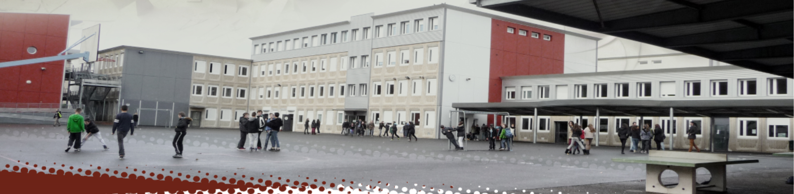
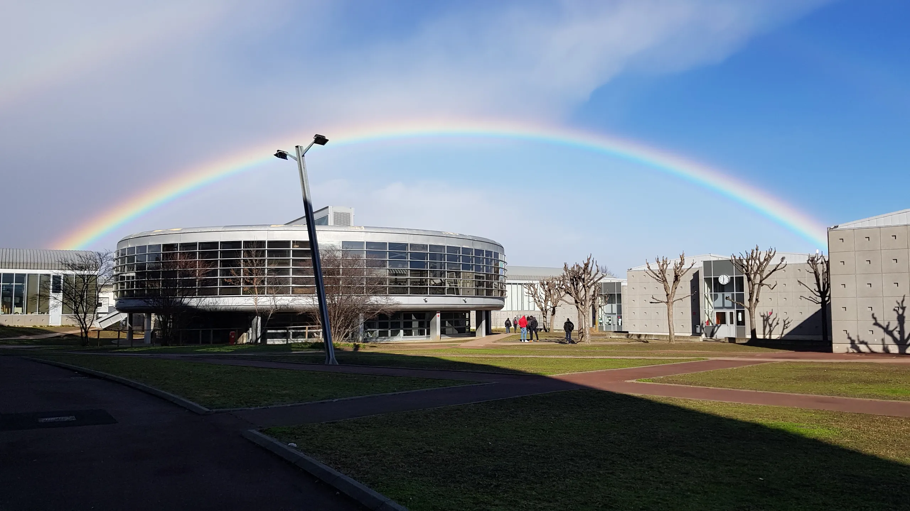

Collège (2017-2020)
J'ai été au Collège Irène Et Frédéric Joliot-Curie à Aubière et en suis ressorti avec un Brevet Mention Très Bien
Lycée (2020-2023)
Ensuite je me suis orienté dans une filiaire générale au Lycée Jeanne D'Arc de 2020 à 2023. Avec une option Physique arrétée en 1ère et options Mathématiques ainsi que NSI suivies en Terminale et je suis sorti de cette formation avec un Bac mention Bien
Prépa (2023)
Ayant bien réussi mon année de Terminale, j'ai pensé pouvoir poursuivre mes études en Prepa MP2I au Lycée Lafayette. Cependant j'ai rencontré quelques difficultées dans la prépa, notament le fait que les cours soit trop abstrait. Il n'y avait pas assez de concret pour moi qui aime manipuler ce que je dois utiliser. J'ai donc quitté la prépa en décembre 2023 car l'enseignement donné là-bas ne me correspondais pas.
BUT info (2023-....)

Je m'intègre bien ,et j'aime ce que je fais depuis le début d'année dans cette filliaire, à SUIVRE !